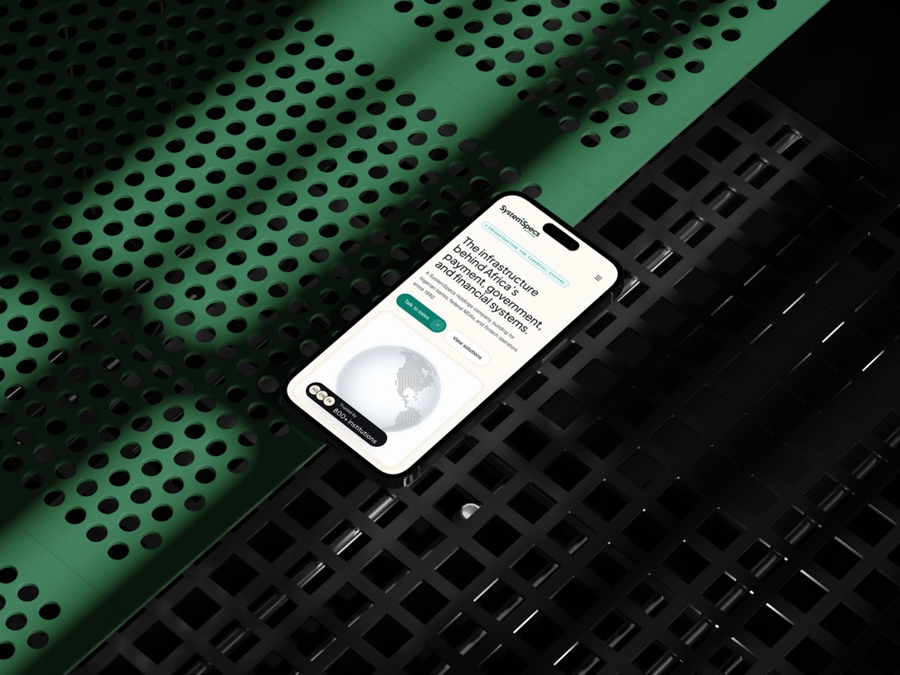

Overview
SystemSpecs Technology Solutions is one of those companies most people outside Lagos haven't heard of. Everyone in Nigeria has touched it though, mostly without knowing. They own Remita, the payment rail behind the federal Treasury Single Account, every tier-1 Nigerian bank, and more than 40 government ministries. School fees, taxes, anything paid to a government agency.
I gave myself 3.5 days to rebuild it from scratch with Claude as a collaborator. Marketing site, design system, UI kit. One repo, one weekend, one designer.
Day 0, The brief
I started before I started. Day 0 is the day before the build, the day you write the brief that the rest of it will reference. I sat down and wrote the PRD myself. I didn't want a freeform "redesign" brief that drifts into vibes. I wanted a document a real team could ship against, even though I was the team.
The prompt to Claude was short. Be the PM. Run a UX/UI audit of the current site first. Then write the redesign PRD. Anchor the audit around a specific question: why doesn't the current site work for SystemSpecs's actual position as a 32-year-old technology infrastructure company. That last bit was important. I didn't want a critique of font choices. I wanted a diagnosis of the credibility gap.
What came back was a 22-kilobyte document. Executive summary, IA audit, visual audit, messaging audit, CTA analysis, mobile, accessibility, and then the actual PRD with problem statement, target audience, success metrics, scope, page sections, design system direction, technical requirements, and a phased timeline. It read like something a senior PM would have spent a week on.
Two lines from it stayed with me through the rest of the build. The first was about who STSL actually is versus how their site presents them. The second was about the editorial direction. The brief called for what it named "Editorial Luxury", which sounds pretentious written down, but the spirit of it was simple. Treat the marketing pages like a long-form publication, not a SaaS template. Use restraint. Let the system do the work.
The type stack landed on Plus Jakarta Sans for display, Geist for body, Source Serif 4 italic for pull-quotes, and JetBrains Mono for captions and code. Four typefaces, each chosen for what it does that the defaults don't.
I also locked the max content width at 88rem, which is wider than most marketing sites. The reason was that the site needed to feel like it had room to breathe. A 32-year-old infrastructure company doesn't need to act small. The grid underneath is 12 columns, which is the standard most editorial and product systems lean on. 12 divides cleanly into halves, thirds, quarters, and sixths, so the rhythm holds whether a row is two-up, three-up, or four-up. The eye reads the page as ordered without having to think about it.
The thing I noticed about writing the PRD as Day 0 is how much it changed Day 1. I wasn't designing into the void. Every choice on Day 1 referenced a line in the brief. The brief became the alignment partner I'd normally have a stakeholder for.
what I gave it
- 01systemspec-prd-summary.mdThe 22-kilobyte PRD that anchored every Day 1 choice.
- 02case-study-stsl-plan.mdBuild plan, deliverable order, day-by-day priorities.
- 03stsl.com.ng (live)The original site, audited line by line for what was working and what wasn't.
- 04brand-references.mdEditorial direction, type stack, the refusals before any pixel.
- 05site-styling.mdPatterns from the live site, captured for the model to mimic where appropriate.
- 06agent-functions.pngMap of which specialised agent owned which slice of the build.
Day 1, System before pages
Day 1 was a system day. The bet was that the design system goes first, even though nobody sees it yet. No marketing pages, no homepage, no hero. Just tokens, primitives, and the first round of layout components. By the end of the day, the only thing on screen was a docs page that listed swatches, type scales, and a few buttons. Most people would call that a wasted Saturday. I think it was the most important decision I made all four days.
The architecture was three layers. Primitive tokens at the bottom (raw color values, spacing scale, type ramp), semantic tokens in the middle (bg-canvas, text-primary, accent-default, names that describe meaning, not appearance), and component tokens on top (button-bg, card-radius, nav-blur, names that describe usage). Every color the marketing site would later use referenced a semantic token. Every semantic token referenced a primitive. That's three lookups for any given pixel, which sounds like overhead, but it's actually how a system stays sane when you start adding pages.
I split the system into its own workspace, separate from the marketing app. The foundations layer (raw values) lived in one folder, the STSL brand bindings (cream, charcoal, accent red, the typeface stack) in another. Marketing pages and the UI kit both pulled from those two. That structure made one thing true: if I wanted to change a token, say the cream canvas hue, I'd touch one file and every page would update. If I wanted to swap brands later, I'd add a second brand binding and the system would adopt it.
Type was where I spent the most time. The brief had said "no Inter, no Roboto, no defaults". I went looking for typefaces with personality that weren't trying to look expensive. The display ended up being Plus Jakarta Sans at medium weight, which has a quiet authority and pairs well with serif italic. The body went to Geist, which is technical without being cold. Pull-quotes used Source Serif 4 italic, which has the slightly slanted warmth of editorial writing. Captions and code went to JetBrains Mono. Four typefaces, each pulling its weight.
The design system isn't a deliverable at the end, it's the load-bearing infrastructure on day one.
Motion was the other token category that had to land on Day 1. I picked four easing curves and three durations and gave them names: ease-expressive for the soft cinematic curve, ease-snappy for click feedback, ease-natural for content reveal, and ease-precise for UI states. Then I locked them into a single CSS variable file. Every transition on the marketing site later referenced one of those four. Nothing freelanced.
/* brand */
--brand-canvas: #f4f0e6;
--brand-ink: #14141a;
--brand-accent: #e40202;
/* type */
--font-display: 'Plus Jakarta Sans', sans-serif;
--font-body: 'Geist', sans-serif;
--font-quote: 'Source Serif 4', serif;
--font-mono: 'JetBrains Mono', monospace;
/* motion */
--ease-expressive: cubic-bezier(0.16, 1, 0.3, 1);
--ease-snappy: cubic-bezier(0.34, 1.56, 0.64, 1);
--dur-quick: 180ms;
--dur-default: 320ms;By the end of Day 1, the design system docs page existed at /design. Empty marketing pages. No hero. No content. But every primitive that the rest of the build would need (Button, Link, Card, Field, Tabs, Accordion, Dialog, Tooltip, Select, Checkbox, Radio, Skeleton) had been built and demoed against the tokens. Day 2 onward, I never had to invent a new component. I just composed the ones already built.
That's why Day 1 looked the way it did. The system is the page you don't see.
Day 2, The slow day
What does a slow day actually buy you? Two commits and the eight hours it saved on Day 3. A mobile-responsive sweep on the design system docs page and a flatten-icon-tile fix that nobody would notice. From the outside, it looks like I lost a day.
From the inside, Day 2 was the day the build didn't blow up.
Most of Day 2 wasn't in code. It was in Figma. I went back to the brief, scrolled through the audit notes, and started laying out static frames of every marketing page at the right max-width, with the type stack from Day 1 plugged in. No interaction, no motion, no component logic. Just composition. What does the homepage hero feel like with the actual headline. What does the solutions page rhythm look like with three real paragraphs. Where does the footer sit on a 16-inch laptop versus a 13-inch.
Doing this in static Figma instead of in code meant I caught the things that would've been three commits each in code. The wordmark needed a tighter scale on the homepage hero. The audience tiles needed two breakpoints, not one. The footer atmosphere had to read on dark mode without the green tint going neon.
Day 2 saved me at least eight hours on Day 3. The rebuild went fast not because I worked fast on Day 3, but because I had already decided on Day 2 what the rebuild was going to be. The slow day is a discipline. It's the day where you don't ship, on purpose.

Day 3, The full rebuild
Day 3 was 22 commits and most of them were fixing things. The single big one was tagged "STSL marketing site v1, full rebuild" and it was the only commit that actually built new pages. Everything else was the system reacting to itself.
Two of those reactions are worth telling, because they're the kind of moment that doesn't show up in a portfolio shot but tells you what the day actually was.
The first was a deploy-path issue. The site lived under a subpath on the host, which meant every internal link, every asset reference, every fetch had to be aware of that prefix. The framework handles most of it, but the combination of static export, client-side routing, and an aggressive transition layer meant the bridge wasn't watertight. Links that worked locally returned 404 on the deploy. I wrote a tiny helper that rewrote every internal href in one place and re-ran the export. That fix is exactly two characters longer than it needs to be. It works.
Hint how I'd describe the broken-links fix
You don't have to know the technical fix to ask for it. Just tell Claude what you're seeing:
my site works fine on my laptop, but every internal link breaks when I deploy it online. the site lives in a subfolder on the host, like /project-name. write me a small bit of code that fixes every link, then either tell me where to drop it in or just patch it and redeploy yourself. keep it simple.
The second one is the more honest of the two. Worth staying with for a beat. I'd built a clever route-transition wrapper that intercepted clicks on internal links to add a soft cross-fade between pages. Nice idea. It also broke every internal link because the click interception fired before the browser could navigate, and the transition's promise resolution was racing the route push. The pages just stopped going anywhere.
A clever abstraction broke real links, and I had to crawl back into the static HTML and rewrite hrefs by hand.
I tried to debug the wrapper. Then I tried to fix it. Then I gave up, ripped it out, and replaced the transition with a simple opacity reveal that doesn't touch the click pipeline at all. The takeaway wasn't that abstractions are bad. The takeaway was that on a 4-day build, the cost of debugging a clever thing exceeds the value of having it. Cleverness has a depreciation curve, and on a deadline, the curve is steep.
The rest of Day 3 was the marketing site coming into shape. 17 routes. Homepage with the reactive atmosphere globe. Solutions tree (Banking, E-Government, Community, Enterprise). Products (Pouchii, FundACause, Monicenta). Company pages. Developer page. Contact. Each one referenced primitives from the foundations package and brand components from the brand-stsl package. No new components got invented. Every layout was a composition of things already built.
The 66-pixel sticky header was the kind of detail I lost an hour on. The math is small but specific: the nav's primary button is 36 pixels tall, and I wanted exactly 15 pixels above and below it. That made the header 66. I redesigned the wordmark scale twice to fit that vertical, and once that was settled, every sub-page nav inherited it. The math was annoying. The result was a header that doesn't feel like an afterthought.
The cream nav tint was the other small one. I wanted the nav to feel like it floated over the content rather than pasted on top. CSS color-mix(in srgb, var(--bg-canvas) 82%, transparent) with a backdrop-filter: blur(14px) saturate(140%) got me there. The blur softens what's behind it and the saturation bumps colors back up so the page underneath doesn't look washed out. Two CSS properties, more interesting than three weeks of meetings about a nav.
By 11pm, the marketing site v1 was live on GitHub Pages. Everything worked, most of it elegantly. A few things were duct-taped, including the contact form's grid plumbing, which I knew I'd revisit. That was Day 4's problem.
Live gesture · hoverCards lift toward the viewer
Day 4, The slow polish
Day 4 was 29 commits, almost all of them small. None of them changed what the site did. All of them changed how the site felt. This is the day I'd skip if I were trying to ship faster, and the day that would've made the rest of the work feel cheap if I had.
The splash was the first one. The site loaded with a brief moment where the page background was the wrong color before the styles hydrated. A faint cream flash on dark mode that lasted maybe 80ms. Most people don't see it. I saw it. I added a pre-paint script that runs synchronously in <head> and sets a data-splash="active" attribute on <html> before the body paints. The CSS keyed off that attribute and held the canvas at the right color until the splash dismissed. The flash went away. That's an 80ms problem nobody asked me to fix and the kind of polish a site either has or doesn't.
Hint asking Claude to fix the loading flash
The fix is faster to describe than to write from scratch. Just say what you're seeing:
when the page first loads in dark mode, I see a tiny flash of the wrong background colour for a split second before the dark theme kicks in. fix it so the right colour shows from the very first frame, not after.
The hover gesture on the audience tiles was Day 4's most visible iteration. The first version had a 400ms slow expressive ease-out. It looked great in isolation. In context, scrolling past three of them in a row felt slow. I cut it to 200ms with a snappier ease-out and added a 5% scale-up so the cards lifted toward the viewer. The exact commit message reads "snappier 200ms ease-out (was duration-slow 400ms expressive)". That's the kind of decision you can only make by looking at the live site and noticing what feels off, then changing one variable and looking again.
Mobile snap-scroll was the third thing. The audience tiles and the pathway tiles wanted to be a horizontal carousel on phones, not a stacked column. CSS scroll-snap got me 80% of the way there. The remaining 20% was tuning the snap-padding so the next card peeked into view at the right amount, signaling "there's more here". That detail tells the user the carousel is interactive without an arrow icon.
The OG image was the smallest commit and the most embarrassing. I'd exported the social card as a 1.4MB PNG. WhatsApp didn't show a preview. Slack didn't show a preview. iMessage didn't show a preview. The reason was the file size limit on those platforms' link preview fetchers, which is roughly 300KB. Re-exporting as JPG dropped it to 281KB and every preview started rendering. The commit message was "OG image: PNG (1.4MB) → JPG (281KB) for WhatsApp preview". That's a 1-line fix that unlocked every share-on-mobile flow.
The contact form got a Day 4 rebuild. On Day 3 I'd built it with a Grid plumbing system that was overkill for a 5-field form. On Day 4 I tore it out and built a dedicated mobile layout that was about 40 lines shorter. Same look. Less to maintain.
By Friday at 11:21am, the site was tagged v1 and shipped. The commits from that day all had names like "v1 finalize: faster splash + visible-inside-hero reveal + SEO + a11y". The final version felt like a real site, not a demo. The difference between the two is mostly the work nobody sees.
Build hygiene
A handful of decisions made early carried most of the build across 56 commits. They're worth naming. The site is a static export, so no server runtime ever has to be alive for the page to load. That removes a whole category of failure modes. There's no Node process to crash, no runtime error to debug at 2am, no scaling question to answer. The HTML is a file. The browser opens it.
npm workspaces drew clear lines between the foundations package, the brand package, the marketing app, and the UI kit. Touching one didn't accidentally break another. When something did break, the diff was small enough to spot.
Theme switching is token-driven, not component-driven. Every dark-mode color is a re-binding of the same primitive token, not a new color. That meant flipping themes was a matter of updating one file, and no component had to know which theme was active. The frozen-dark surfaces (the panels that stay dark in any theme) opted out via a single utility class.
Images had a small pipeline. Every screenshot got run through sips on the way in: max long-edge 2400px for desktop shots, 1600px for mobile, JPEG quality 78. Originals stayed in a gitignored folder so the source was never lost. The article you're reading is under 3MB of media total.
The build broke twice. Once was the GitHub Pages basePath problem covered in Day 3. The other was the splash gate, which set a data-splash="active" attribute synchronously in <head> using a regex to detect the design route. The first version checked pathname.startsWith('/design') which silently failed on GitHub Pages because the deploy path is /Systemspec-website-redesign/design. Switching to /\\/design(\\/|$)/.test(pathname) made it work under any basePath.
The fix took 30 seconds. Finding it took longer than that.
Deploying didn't need a separate workflow. The static export drops a folder of HTML and assets, and Vercel and GitHub Pages both pick it up directly. I let Claude handle the wiring. It read the Vercel CLI docs, walked me through vercel login once, attached the project to my account, and set up a redeploy on every push. Same flow works on Netlify or Cloudflare Pages. The only step you can't outsource is the OAuth login, which has to happen in your browser.
What I shipped
Three deliverables, one repo. A 17-route marketing site that covers solutions, products, company, developers, and contact. A design system docs page that lays out tokens, primitives, patterns, and compositions in five sections. A static UI kit that lets a developer pull components without bringing the whole brand. All of it deployed on GitHub Pages from a single static export, free to host, ~30 seconds to redeploy.
The marketing site has light and dark mode that flip cleanly because the tokens are theme-aware. The dark mode isn't an inversion of the light mode, it's a separate brand binding that re-references the same primitive tokens. Cards that need to feel "always dramatic" got a frozen-dark surface utility that ignores theme. The rest of the site flips.
The design system page is the artifact I'm most proud of. It documents what the build is made of. Brand. Foundations. Primitives. Patterns. Compositions. Each section is interactive. You can hover the buttons, type in the fields, open the dialogs. It's a working artifact, not a screenshot reel.
The UI kit is the smallest deliverable and the most useful one. It's a static HTML page that pulls the foundations package without the brand layer. A developer who wants STSL's primitives but not STSL's color palette can reach into the kit and take what they need.
Working with Claude
The way I worked with Claude over those four days wasn't really collaboration in the human sense. It was something closer to having a very fast junior with infinite patience and a deep familiarity with React. I knew what I wanted. Claude knew how to type it out. The interesting question, four days in, is what each of us actually contributed.
Claude was good at the parts I'd usually find boring. The kind of work where you rename a token and have to update it in 14 places. Claude does that in a minute and doesn't get tired of it. Boilerplate. Cross-file consistency. Wiring up the build config. Translating a layout spec into JSX. Refactoring three similar components into one parameterized one. Writing the type definitions. Writing the test cases. The work that takes a developer a week to do carefully and not enjoy. Claude did it in under an hour.
The taste calls stayed mine. Every aesthetic decision. Every "is this too clever" pull-back. Every cut. Whether the hero needed a globe or didn't. Whether the audience tiles read as five-up or four-up at 1440. Whether the splash should be cream or charcoal. Whether the underline-draw on links was 0.45s or 0.55s. None of those questions have a correct answer. They have an answer that fits the brief, and recognizing that fit is what design is.
What I noticed by Day 3 is that Claude was best when I gave it a constraint and a sample. The vague prompts ("make this look better") produced the kind of generic output you can spot from across the room. The specific ones produced exactly what I wanted, every time.
The way I scaled that pattern was by splitting the work across seven specialised agents, each with one ownership, and pulling in a small library of reusable skills for the writing, research, and visual-craft work. The agents handled lanes. The skills carried voice, structure, and method between sessions.
The discipline that made this actually work wasn't the agents themselves. It was not letting any agent reach into another agent's lane. When the copywriter started touching CSS, output went sideways. When visual-craft tried to write tokens, the system drifted. The agents are useful because they're narrow.
resource breakdown
What I paid, and what the tokens did across the same four days.
Running cost on the left, context window on the right. Studio comparison based on a 5 to 8 person team over 12 weeks.
running cost
Drag the scrubber to compare.
context window
Claude Sonnet
One thing I didn't fully plan for was token usage. By Day 4 morning the context window was gone, a full conversation wiped out by four days of accumulated code, reviews, and back-and-forths. The numbers, when I checked later, were about 5M tokens across three sessions, roughly $70 in API costs. I had to restart the session cold, with no memory of what had been built. The way I handled it was keeping a running reference folder alongside the repo: markdown docs with the decisions made, inline code comments explaining the non-obvious calls, and a short PRD I could paste at the start of any new session to re-anchor the model. That habit turned out to matter more than the agents. The agents are only as useful as the context you give them.
That's the real lesson about working this way. Claude doesn't replace the designer. Claude removes the friction between the designer's idea and the running site. The friction was never the value-add of design. It was the tax on doing design.
Vibecoding doesn't replacedesign taste, it amplifies it.
The amplification works in both directions. If I have strong taste, Claude makes it ship faster. If I have weak taste, Claude makes it ship faster too, and the weakness compounds. The output is only ever as considered as the inputs. The implication for the broader question of "AI-assisted design" is that the taste premium is going up, not down. The execution premium is going down. The designers who are going to do interesting work in the next two years are the ones who can articulate what they want with enough specificity that the model can produce it, then recognize when the output isn't quite right and say why.
I'm not sure what to call this way of working. It's not waterfall, the brief and the system both kept moving while I built. It's not really agile either, no sprints, no standups, just one designer running the whole thing for four days. Whatever it is, it felt faster than anything I'd done, and the output didn't feel rushed. The methodology question is probably the next thing to figure out.
I came into this build with a question about how much of design org work is necessary process and how much is organizational drag. Four days in, I have a partial answer. A lot of process that exists for the team-of-one disappears. Most reviews disappear. Most spec handoffs disappear. The slow march from Figma to staging compresses into the same afternoon. What stays is the part that isn't process at all. The judgement. The taste. The willingness to look at a thing and say "no, that's not it" and try again.
That's the kind of work I enjoy.